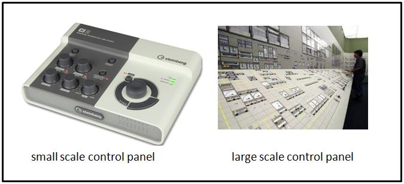
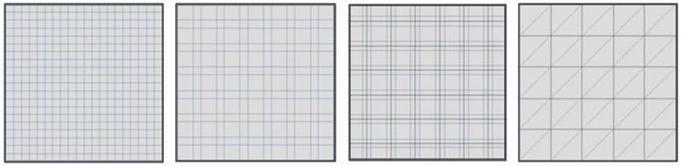
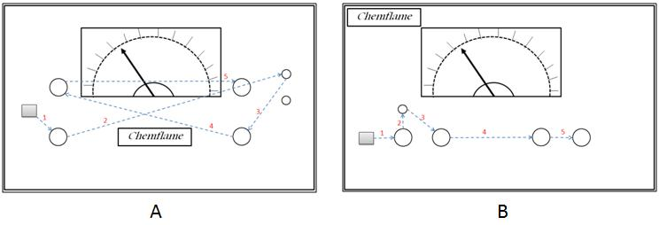
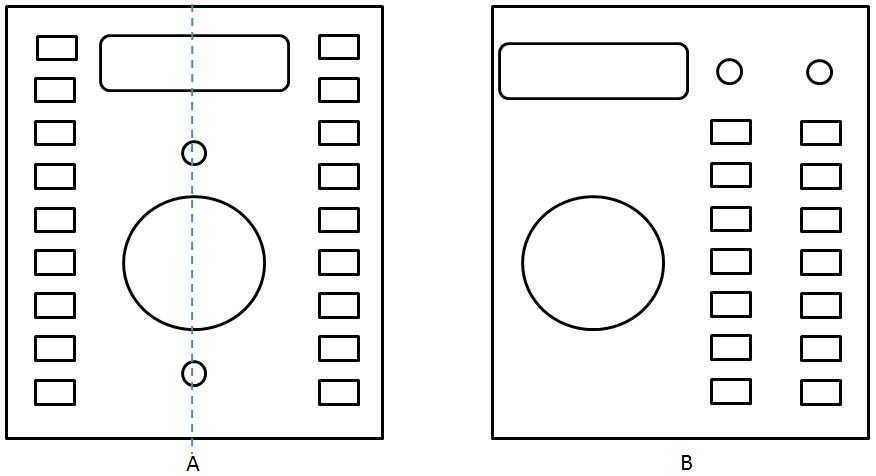
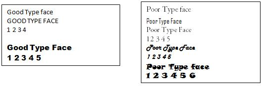
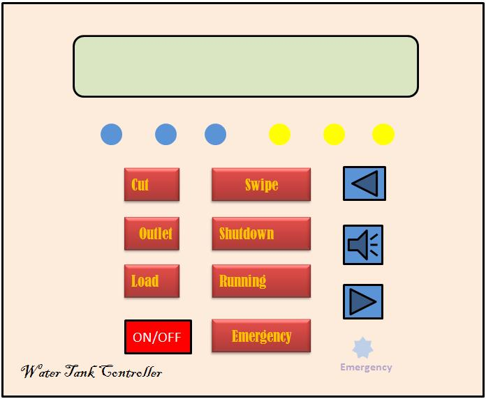
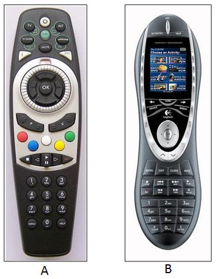
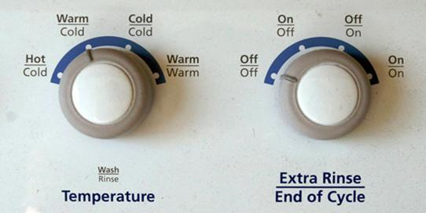

welcome to Prototyping of Control Panel of Domestic Appliances

After performing this experiment
Q1.You will know the funcational, usability and aesthetic requirements for a control panel design.Q2.You will understand the design guidelines to be followed for desinging a control panel.
Q3.You will be able to create and analyse control panel prototypes for
(a)Washing Machine
(b)Induction Stove

What Constitutes A Control Panel?
Parts of a product that user interacts with to perform a task constitutes the user interface (UI). A systematic and effective arrangement of user controls and displays of a product makes the control panel. Control panel can also be used to configure product’s internal features.
Control panel of electronic equipment comprises of elements like LEDs, displays, lamps, switches, meters, push buttons, dial knobs, fuses, printed instructions, labels, name plate etc. In software products the graphical user interface (GUI) forms the control panel.
The interaction between user and control panel elements need not always be physical. Panel elements like visual displays and audio signals also form a part of user interaction and communication. This applies in case of airplane where entire cockpit constitutes the control panel environment. Cockpit control panel design (both aircraft and space craft) is most challenging design tasks.
Consumer products too have control panel or interface. The interface designer of a domestic appliance needs to simplify operations to perform complex tasks. This can make wide spectrum of users use the domestic appliance with ease without much technical knowhow about the product itself. A microwave oven needs careful design of its controls. Any confusion in its operation can result in serious accidents. The buttons on the keypad of a TV remote control, mobile phone or a portable music player are so small that they are difficult to use or are not used eventually by the users.
Therefore designing of control panel is a creative but technically demanding effort that aims at efficient and aesthetically satisfying human product interaction.
Control panel elements are classified into following categories :
1. Activation : for activating a operation e.g. switches, push buttons2. Discrete : for setting fixed operational values or inputs e.g. a rotary dial
3. Continuous: for varying continues values e.g. dials , slider switches , volume knob
4. Rapid : for inputing data rapidly e.g. data entry buttons on a keyboard
Guidelines for selecting control elements and panel layout
Following are the guidelines to be followed while selecting elements and laying out the configuration (designing) of control panels.
1.Select control element suitable for the task: Select control elements which suit to the task,satisfy ergonomic demands and are aesthetic in nature. Higher the usability more efficient is the task performance. Task frequency and control-response ratio (C/R = movement of control for getting valid system response of feedback) are to be kept in mind while choosing the elements carefully.2.Organize control elements in a logical grid. A good control panel or user interface has to fulfill ergonomics, aesthetics and engineering requirements.

There are three different principles on which a panel layout is determined. They are (a) operational sequence
(b) frequency of use and
(c) centre of attention.

Frequency of use principle: Some panel controls are used more frequently than others. In this layout elements are grouped into more frequently used controls and less frequently used controls. The more frequently used controls are colored prominently and put in a visually discernable cluster to distinguish easily as well as placed in a more convenient position to optimize human performance.
Centre of attention principle: Some panel elements need to be always a center of attention like alarm displays, important indicators and emergency controls. In this layout such elements are placed at the centre of the panel before fixing other elements around them.
In some equipments such as medical or communication a combination of the above three principles can be employed.
3. Make the panel aesthetically appealing: The creative design principle of "form follows function" and "Gestalt’s principles of visual order and beauty" form the basis of aesthetic decisions. Contrary to belief aesthetic decisions are not taken based on someone’s liking or fancy tastes. Control panels are not art pieces.
(ii)Symmetry is often desirable but is likely to make the panel look predictive and boring. Designers can use asymmetry of placement to bring in an element of aesthetic visual interest. Figure below shows example of (A) symmetrical and (B) asymmetrical configuration of control panel elements.

(iii)There is a need to leave sufficient visual space around each element. Very closely placed elements give a visual message of being overcrowded and a feeling of error during operation creeps in.
(iv)Simple fonts should be used for naming / labeling. Curved typefaces or colorful flamboyant alphabets and numerals distract and should be avoided. Simple straight fonts of size that is easy to read should be preferred. Some examples of recommended & not recommended typefaces are shown below.

(v)Only sober background colors that aid in reading the displays and labels in low light conditions should be used.
Navigate to SIMULATOR tab and follow the links to open required prototype builder webpage.
For induction stove prototype builder you will be prompted to download the program "ISTOVE.EXE" and run it using .NET framework 3.5 runtime environment.
- (A) Pre-Design Task
- 1.Identify various functions/buttons/elements that you require on your washing machine control panel.
2.Clearly specify function and label of each button required on the panel.
3.Find operational sequences for carrying out various tasks on washing machine.
4.Freeze the list of buttons finally required on your panel layout.
5.We recommend you to draw a pencil sketch of the layout to be designed before you start. Chose one or combination of the principles like operational sequence principle, frequency of use principle or centre of attention principle.
(B) Prototyping Washing Machine Control Panel
1.The prototype builder webpage for washing machine has three sections
(a)Top - having function buttons explained further.
(b)Middle - having dragabble control panel elements like buttons, labels and LEDs.
(c)Bottom - design workspace with control panel outline for the desining layout.
2.Select the panel elements, drag and place them as per your proposed layout. Also drag relevant labels and place them appropriately
3.Make use of grids for alligning elements by clicking Small Grid / Large Grid buttons on the top.
4.You can clear the entire workspace to start again by pressing Clear Panel button on top.
5.After completing the entire layout you can freeze the workspace by using Freeze/Unfreeze button from the top. The freeze button will prevent you from making any changes to the layout.
(C) Evaluating Washing Machine Control Panel Design
1. Click the Evaluate Protype button and you will be presented with a check-list.
2. Check the completed tasks as per guidelines.
4. This will give you an idea of things lacking in your design so as to bring it upto a standard.
5. At end, cross check your layout design with a reference sample layout provided. Please note, there is no one correct solution. There could be many layouts that are equally good.

To go to the experiment please click here

Q1.Is there a difference between a user interface and a control panel?
Q2.What are the key considerations while designing a control panel layout?
Q3.On what principles are the control elements placed on the control panel?
Q4.The figure below shows a prototype of a control panel.
(a)Identify the design elements missing in this design.
(b)Identity which layout design criteria have been violated.

Q1.Redesign the prototype given in the QUIZ using panel layout design guidelines.
Q2.Which one of the remote controllers shown below is better?A or B?Why?

Q3.What is the main problem in the control panel shown below?


- inimalistic and intuitive interface design guidelines for consumer electronics devices http://www.jot.fm/issues/issue_2007_03/column5.pdf
- Why Consumer Products Have Inferior User Experience? http://www.useit.com/alertbox/20040315.html